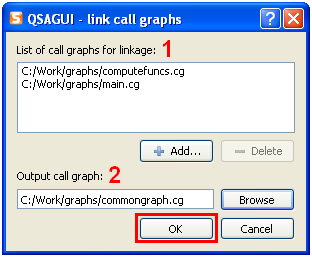

Contents
What is QSAGUI?
Getting started
Create call graph
Link call graphs
Clean call graph
Update call graph
Get funs/files lists
Show call graph
Settings
|
Link call graphs
Use "Call graph" -> "Link..." or "Link" button on tool bar or "Ctrl+L".

1. Add call graphs for linkage to the list, use "Add..." and "Delete" buttons for items managing.
2. Select full name of common call graph.
Press the "OK" button to get common call graph.
|